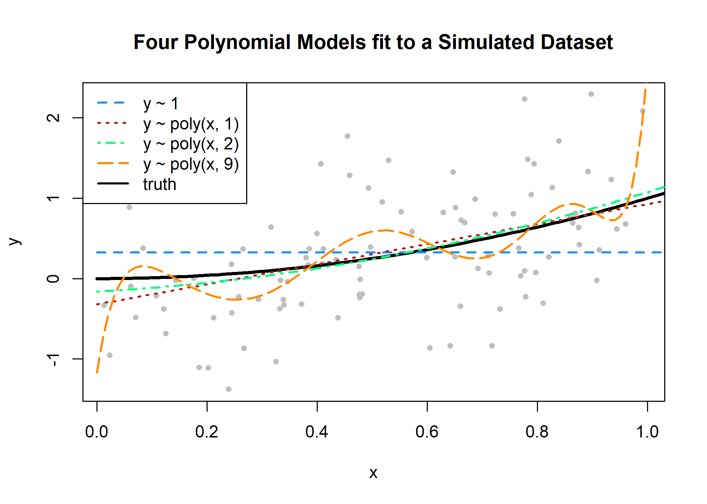
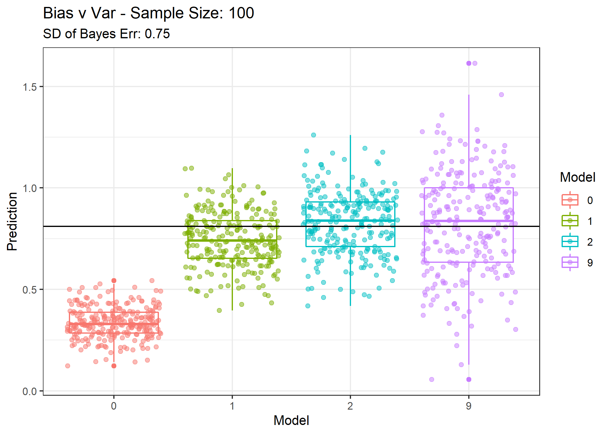

NN = 100 #----> In class, we will change this to
# see how our results change in response
SD.of.Bayes.Error = 0.75 #-----> This, too, will change.
# Note that both of these are used in the next chunk(s) to generate data.
library(ggplot2)
library(patchwork)
f = function(x) {
x ^ 2
}
get_sim_data = function(f, sample_size = NN) {
x = runif(n = sample_size, min = 0, max = 1)
eps = rnorm(n = sample_size, mean = 0, sd = SD.of.Bayes.Error)
y = f(x) + eps
data.frame(x, y)
}
set.seed(1)
sim_data = get_sim_data(f)
fit_0 = lm(y ~ 1, data = sim_data)
fit_1 = lm(y ~ poly(x, degree = 1), data = sim_data)
fit_2 = lm(y ~ poly(x, degree = 2), data = sim_data)
fit_9 = lm(y ~ poly(x, degree = 9), data = sim_data)
set.seed(42)
plot(y ~ x, data = sim_data, col = "grey", pch = 20,
main = "Four Polynomial Models fit to a Simulated Dataset")
grid = seq(from = 0, to = 2, by = 0.01)
lines(grid, f(grid), col = "black", lwd = 3)
lines(grid, predict(fit_0, newdata = data.frame(x = grid)), col = "dodgerblue", lwd = 2, lty = 2)
lines(grid, predict(fit_1, newdata = data.frame(x = grid)), col = "firebrick", lwd = 2, lty = 3)
lines(grid, predict(fit_2, newdata = data.frame(x = grid)), col = "springgreen", lwd = 2, lty = 4)
lines(grid, predict(fit_9, newdata = data.frame(x = grid)), col = "darkorange", lwd = 2, lty = 5)
legend("topleft",
c("y ~ 1", "y ~ poly(x, 1)", "y ~ poly(x, 2)", "y ~ poly(x, 9)", "truth"),
col = c("dodgerblue", "firebrick", "springgreen", "darkorange", "black"), lty = c(2, 3, 4, 5, 1), lwd = 2)
set.seed(1)
n_sims = 250
n_models = 4
x = data.frame(x = 0.90) # fixed point at which we make predictions
predictions = matrix(0, nrow = n_sims, ncol = n_models)
for (sim in 1:n_sims) {
# simulate new, random, training data
# this is the only random portion of the bias, var, and mse calculations
# this allows us to calculate the expectation over D
sim_data = get_sim_data(f, sample_size = NN)
# fit models
fit_0 = lm(y ~ 1, data = sim_data)
fit_1 = lm(y ~ poly(x, degree = 1), data = sim_data)
fit_2 = lm(y ~ poly(x, degree = 2), data = sim_data)
fit_9 = lm(y ~ poly(x, degree = 9), data = sim_data)
# get predictions
predictions[sim, 1] = predict(fit_0, x)
predictions[sim, 2] = predict(fit_1, x)
predictions[sim, 3] = predict(fit_2, x)
predictions[sim, 4] = predict(fit_9, x)
}
predictions.proc = (predictions)
colnames(predictions.proc) = c("0", "1", "2", "9")
predictions.proc = as.data.frame(predictions.proc)
tall_predictions = tidyr::gather(predictions.proc, factor_key = TRUE)
## Here, you can save your ggplot output
FinalPlot <- ggplot(tall_predictions, aes(x = key, y = value, col = as.factor(key))) +
geom_boxplot() +
geom_jitter(alpha = .5) +
geom_hline(yintercept = f(x = .90)) +
labs(col = 'Model', x = 'Model', y = 'Prediction', title = paste0('Bias v Var - Sample Size: ',NN), subtitle = paste0('SD of Bayes Err: ',SD.of.Bayes.Error)) +
theme_bw()
FinalPlot
## This is going to aggregate your results for you:
if(!exists('FinalResults')) FinalResults = list()
FinalResults[[paste0('finalPlot.NN.',NN,'.SDBayes.',SD.of.Bayes.Error)]] = FinalPlot
#
# boxplot(value ~ key, data = tall_predictions, border = "darkgrey", xlab = "Polynomial Degree", ylab = "Predictions",
# main = "Simulated Predictions for Polynomial Models")
# grid()
# stripchart(value ~ key, data = tall_predictions, add = TRUE, vertical = TRUE, method = "jitter", jitter = 0.15, pch = 1, col = c("dodgerblue", "firebrick", "springgreen", "darkorange"))
# abline(h = f(x = 0.90), lwd = 2)## This not run automatically.
## To plot the whole list of ggplot objects in FinalResults:
wrap_plots(FinalResults, nrow = 2, guides = 'collect')